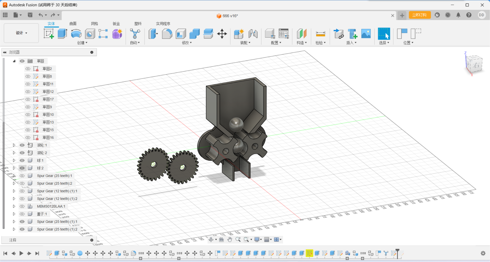
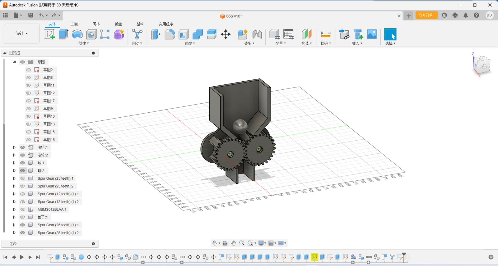
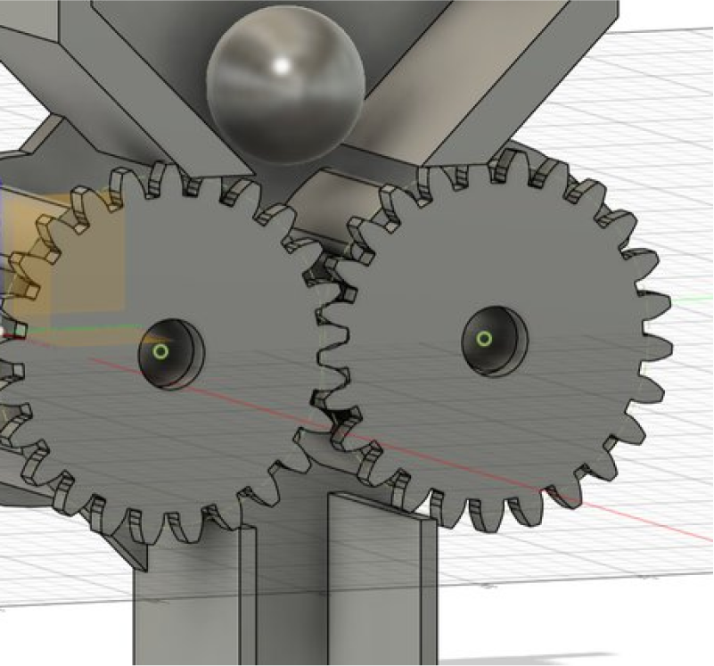
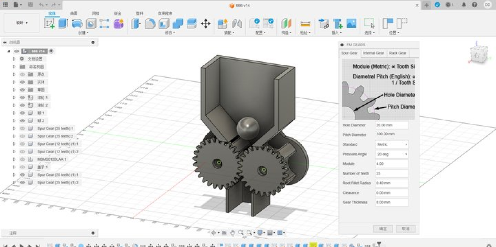
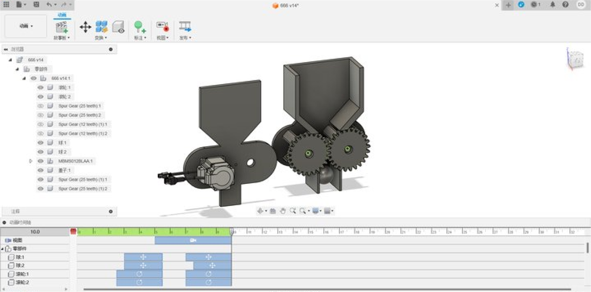
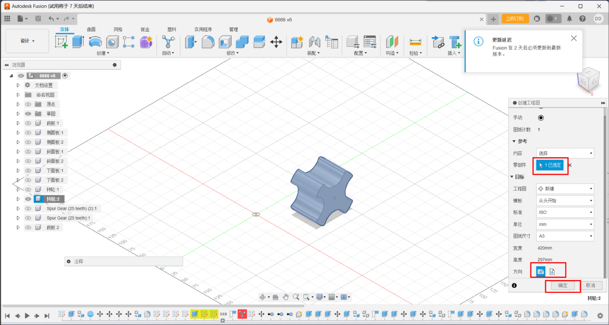

CAD Design
Prepare tool for design.
-Fusion360；Our design software
In this project, we will create a device similar to an egg twisting
machine, which will rotate the motor and gears to allow the balls to
fall one by one.

Autodesk Fusion 360 is a cloud software tool that integrates
computer-aided design (CAD), computer-aided manufacturing (CAM), and
computer-aided engineering (CAE), widely used in product design and
manufacturing.
Step one:Draw sketches, create basic shapes and dimensions of the wheel
and funnel, and create 3D models using tools such as lifting, Boolean
operations, and chamfering.
Step twp:Using Fusion's stretch function, we stretched out the
shape on top of the sketch we had made and chamfered it
Chamfering is an important part of modeling, which prevents our device
from getting stuck on the objects we need to handle, and also reduces
damage to the device and keeps the system up and running
With the alignment function, the parts can be easily assembled because
all the parts are rotated together on a common axis. Such a two-gear
construction is much more reliable than a four-gear one because of the
tolerances created by 3D printing.



To create a CAD model datum:
Before modeling, you need to create some basic geometry shapes, such as planes, circles, rectangles, etc., as a reference and aid for subsequent modeling.
Choose how you want to model:
According to the design requirements, select the appropriate modeling method. Common CAD modeling methods include:
Solid modeling: for objects with well-defined geometries.
Curve modeling: It is suitable for the modeling of complex curves.
Patch modeling: Suitable for objects with a large amount of surface detail
Perform CAD assembly and motion analysis:
If the product consists of multiple parts, the assembly function of the CAD software can be used to place the parts in the correct position and assemble them. At the same time, motion analysis can be performed to simulate the deformation, stress, and collision of the product during movement.
CAD Drawing and Documentation:
Once the modeling is complete, 2D drawings and sections are created using the drawing capabilities of the CAD software, and the modeling process is documented
To create a CAD model datum:
Before modeling, you need to create some basic geometry shapes, such as planes, circles, rectangles, etc., as a reference and aid for subsequent modeling.
Choose how you want to model:
According to the design requirements, select the appropriate modeling method. Common CAD modeling methods include:
Solid modeling: for objects with well-defined geometries.
Curve modeling: It is suitable for the modeling of complex curves.
Patch modeling: Suitable for objects with a large amount of surface detail
Perform CAD assembly and motion analysis:
If the product consists of multiple parts, the assembly function of the CAD software can be used to place the parts in the correct position and assemble them. At the same time, motion analysis can be performed to simulate the deformation, stress, and collision of the product during movement.
CAD Drawing and Documentation:
Once the modeling is complete, 2D drawings and sections are created using the drawing capabilities of the CAD software, and the modeling process is documented
Step three:Set the appropriate size for the gears
Gear meshing requires the same modulus (Modur), tangent of the
indexing circles, and the diameter of the indexing circle
(Pidchidiamet) equal to the number of teeth (Tithnonber) multiplied by
the modulus

Step four:Insert the motor by inserting the manufacturer part
In Fusion 360, you can use the McMester-Carr parts library to find and
insert various mechanical components, including motors and steering
gears. Please follow the following steps:
1. **Click "Insert" > "Insert McMaster-Carr parts." ** (You can see this option in your screenshot).
2. In the pop-up McMaster-Carr browser window, search for the type of motor or steering gear you need. For example, you can search for "DC motor", "servo motor", "gear motor" and so on. The search function of McMaster-Carr is very powerful. You can filter according to various parameters, such as size, voltage, speed, torque, etc.
3. Choose the right model. Browse the search results and find the motor or steering gear model that meets your needs.
4. Configuration model parameters (optional). Some models allow you to configure some parameters, such as the length of the shaft, the location of the installation hole, etc.
5. Click "Insert". This will insert the selected motor or steering gear model into your Fusion 360 design.
1. **Click "Insert" > "Insert McMaster-Carr parts." ** (You can see this option in your screenshot).
2. In the pop-up McMaster-Carr browser window, search for the type of motor or steering gear you need. For example, you can search for "DC motor", "servo motor", "gear motor" and so on. The search function of McMaster-Carr is very powerful. You can filter according to various parameters, such as size, voltage, speed, torque, etc.
3. Choose the right model. Browse the search results and find the motor or steering gear model that meets your needs.
4. Configuration model parameters (optional). Some models allow you to configure some parameters, such as the length of the shaft, the location of the installation hole, etc.
5. Click "Insert". This will insert the selected motor or steering gear model into your Fusion 360 design.

Step five:Add dynamic motion to modeling, simulate the movement of the
machine, and record video
The product consists of multiple parts, which can be placed in the
correct position and assembled using the assembly function of CAD
software. At the same time, motion analysis can be performed to
simulate the deformation, stress, and collision of the product during
movement

Practice for Automated Modeling
Automated Modeling quickly generates design alternatives for
connecting existing geometries in your design. Adding one of the
alternatives to your design, creates a parametric, solid body that is
editable using the Timeline.
Using Automated Modeling speeds up the modeling process by suggesting different geometrical shapes that you can use to complete your design, or that you can use as inspiration for a final design.
Using Automated Modeling speeds up the modeling process by suggesting different geometrical shapes that you can use to complete your design, or that you can use as inspiration for a final design.
To access Automated Modeling, click Design workspace > Solid >
Automate > Automated Modeling
If the selected inputs are symmetrical, a symmetry plane is automatically created. This means that the new solid body will also be symmetrical about this plane.
If the selected inputs are symmetrical, a symmetry plane is automatically created. This means that the new solid body will also be symmetrical about this plane.
Automated Modeling generates two types of design alternatives:
- Smooth Connections - the solid body that is connected to the selected faces using rounded connections (see 1).
- Sharp Connections - the solid body that is connected to the selected faces using sharper, edge-like connections (see 2)
Engineering Drawing
1.Select a file to convert to a project drawing.
2.Select parts and export them horizontally and Create a local view.
Select key objects to view.

3.Select the visible edge style and the appropriate zoom ratio.
4.Build a projection view and select main view, top view, left view,
and overall view。
4.Use the dimensioning to select the size to be marked.
C4D, or Cinema 4D, is a powerful 3D modeling, animation, and rendering
software developed by Maxon Computer in Germany.
Features:
Multiple modeling tools: C4D offers a wide range of modeling tools, including polygon modeling, NURBS modeling, sculpting, and volume modeling, enabling users to create complex 3D models.
Powerful animation features: Keyframe animation, character animation, physics simulation, dynamics, and more are supported to easily create natural and smooth animation effects.
Advanced Rendering Engine: Produces photorealistic renderings with support for effects such as physical rendering, global illumination, ambient occlusion, and global reflections.
Rich material and texture libraries: Users can use preset materials or create custom materials to enhance the look of their models.
Simulation and Dynamic Simulation: Support a variety of simulations, such as cloth simulation, liquid simulation, smoke simulation, and fragmentation simulation, to add realism and dynamics to the scene.
Particle and Effect Systems: Supports the creation and control of particle systems, simulates effects such as fire, explosions, raindrops, and more, and provides a variety of special effect tools.
Plug-in and scripting interfaces: It has an open plug-in and scripting interface, allowing users to extend the functionality of the software by installing plug-ins or writing custom scripts.
Multiple modeling tools: C4D offers a wide range of modeling tools, including polygon modeling, NURBS modeling, sculpting, and volume modeling, enabling users to create complex 3D models.
Powerful animation features: Keyframe animation, character animation, physics simulation, dynamics, and more are supported to easily create natural and smooth animation effects.
Advanced Rendering Engine: Produces photorealistic renderings with support for effects such as physical rendering, global illumination, ambient occlusion, and global reflections.
Rich material and texture libraries: Users can use preset materials or create custom materials to enhance the look of their models.
Simulation and Dynamic Simulation: Support a variety of simulations, such as cloth simulation, liquid simulation, smoke simulation, and fragmentation simulation, to add realism and dynamics to the scene.
Particle and Effect Systems: Supports the creation and control of particle systems, simulates effects such as fire, explosions, raindrops, and more, and provides a variety of special effect tools.
Plug-in and scripting interfaces: It has an open plug-in and scripting interface, allowing users to extend the functionality of the software by installing plug-ins or writing custom scripts.
Technical Background:
Formerly known as FastRay software released in 1989, C4D was originally released on the Amiga platform, later renamed CINEMA 4D, and continues to be updated and enhanced in multiple versions.
With the continuous development of technology, C4D has become the software of choice for many excellent artists and film companies, and is widely used in advertising, film, industrial design and other fields.
Version Updates:
C4D 2024, for example, brings modeling improvements, powerful enhancements to the new unified simulation system, significant additions to the node editor, and the Redshift renderer as the default renderer, significantly improving the performance and efficiency of the software.
Application Cases:
C4D is prominent in all kinds of movies depicted and is valued by more and more film companies. At the same time, its application is also widely involved in advertising, industrial design and other fields, providing strong technical support for creators.
Formerly known as FastRay software released in 1989, C4D was originally released on the Amiga platform, later renamed CINEMA 4D, and continues to be updated and enhanced in multiple versions.
With the continuous development of technology, C4D has become the software of choice for many excellent artists and film companies, and is widely used in advertising, film, industrial design and other fields.
Version Updates:
C4D 2024, for example, brings modeling improvements, powerful enhancements to the new unified simulation system, significant additions to the node editor, and the Redshift renderer as the default renderer, significantly improving the performance and efficiency of the software.
Application Cases:
C4D is prominent in all kinds of movies depicted and is valued by more and more film companies. At the same time, its application is also widely involved in advertising, industrial design and other fields, providing strong technical support for creators.